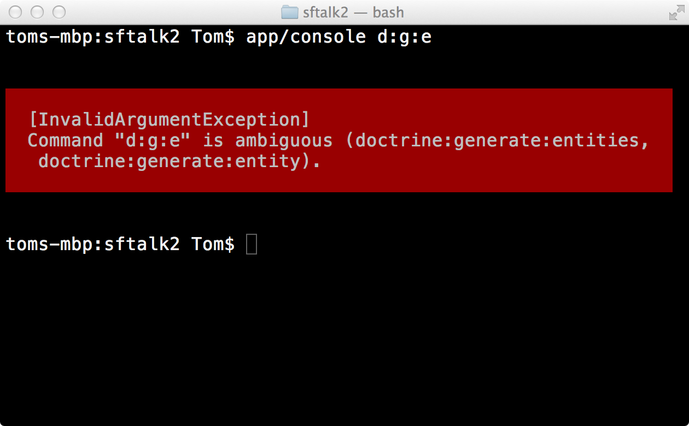
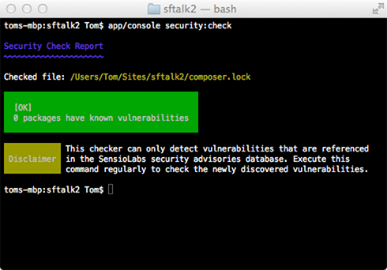

The Symfony CLI
Digital Poets Society - Symfony2 Meetup (Melbourne)
Tom Corrigan / @thetommygnr
About Me
- Developing Symfony apps since 2.0
- Lead Developer of crscertus.com.au
- Co-Founder of rostercloud.com
- Attended Symfony Live 2012 in Paris
The console itself
$ app/console
Symfony version 2.5.3 - app/dev/debug
Usage:
[options] command [arguments]
Options:
--help -h Display this help message.
--quiet -q Do not output any message.
--verbose -v|vv|vvv Increase the verbosity of messages: 1 for normal output, 2 for more verbose output and 3 for debug
--version -V Display this application version.
--ansi Force ANSI output.
--no-ansi Disable ANSI output.
--no-interaction -n Do not ask any interactive question.
--shell -s Launch the shell.
--process-isolation Launch commands from shell as a separate process.
--env -e The Environment name.
--no-debug Switches off debug mode.
Available commands:
help Displays help for a command
list Lists commands
assetic
assetic:dump Dumps all assets to the filesystem
assets
assets:install Installs bundles web assets under a public web directory
cache
cache:clear Clears the cache
cache:warmup Warms up an empty cache
config
config:debug Dumps the current configuration for an extension
config:dump-reference Dumps the default configuration for an extension
container
container:debug Displays current services for an application
doctrine
doctrine:cache:clear-metadata Clears all metadata cache for an entity manager
doctrine:cache:clear-query Clears all query cache for an entity manager
doctrine:cache:clear-result Clears result cache for an entity manager
doctrine:database:create Creates the configured databases
doctrine:database:drop Drops the configured databases
doctrine:ensure-production-settings Verify that Doctrine is properly configured for a production environment.
doctrine:generate:crud Generates a CRUD based on a Doctrine entity
doctrine:generate:entities Generates entity classes and method stubs from your mapping information
doctrine:generate:entity Generates a new Doctrine entity inside a bundle
doctrine:generate:form Generates a form type class based on a Doctrine entity
doctrine:mapping:convert Convert mapping information between supported formats.
doctrine:mapping:import Imports mapping information from an existing database
doctrine:mapping:info Shows basic information about all mapped entities
doctrine:query:dql Executes arbitrary DQL directly from the command line.
doctrine:query:sql Executes arbitrary SQL directly from the command line.
doctrine:schema:create Executes (or dumps) the SQL needed to generate the database schema
doctrine:schema:drop Executes (or dumps) the SQL needed to drop the current database schema
doctrine:schema:update Executes (or dumps) the SQL needed to update the database schema to match the current mapping metadata
doctrine:schema:validate Validates the doctrine mapping files
generate
generate:bundle Generates a bundle
generate:controller Generates a controller
generate:doctrine:crud Generates a CRUD based on a Doctrine entity
generate:doctrine:entities Generates entity classes and method stubs from your mapping information
generate:doctrine:entity Generates a new Doctrine entity inside a bundle
generate:doctrine:form Generates a form type class based on a Doctrine entity
init
init:acl Mounts ACL tables in the database
orm
orm:convert:mapping Convert mapping information between supported formats.
router
router:debug Displays current routes for an application
router:dump-apache Dumps all routes as Apache rewrite rules
router:match Helps debug routes by simulating a path info match
security
security:check Checks security issues in your project dependencies
server
server:run Runs PHP built-in web server
swiftmailer
swiftmailer:debug Displays current mailers for an application
swiftmailer:email:send Send simple email message
swiftmailer:spool:send Sends emails from the spool
translation
translation:debug Displays translation messages informations
translation:update Updates the translation file
twig
twig:debug Shows a list of twig functions, filters, globals and tests
twig:lint Lints a template and outputs encountered errors
yaml
yaml:lint Lints a file and outputs encountered errors
This will list every command registered in your application
$ app/console | grep twig
twig
twig:debug Shows a list of twig functions, filters, globals and tests
twig:lint Lints a template and outputs encountered errors
Combine it with grep
Shortcut syntax
$ app/console d:s:v
The above is equivalent to:
$ app/console doctrine:schema:validate
If the shortcut is ambiguous the console helps you out
Commands are self documenting
$ app/console help twig:lint

Other general notes
- Always be aware of what environment you need to run your command in
- Don't use interactive mode without a good reason. It will bite you
The Commands
Now that we know how to use the console lets explore the commands
Assetic
Dumps all your assets (CSS/JS) and applies all configured filters
$ app/console assetic:dump
Scans your files for changes and reprocesses any modified files.
$ app/console assetic:dump --watch
Combine this with the following configuration for a huge speedup in dev
#config.yml
assetic:
use_controller: false
assets:install
$ app/console assets:install
- Copy Resources/public from every bundle to the web directory
Tip: put this in your composer.json and you'll never have to run this command again
"extra": {
"symfony-assets-install": "symlink"
}
cache:clear
$ app/console cache:clear
Clears the application cache for a given environment
This is the first thing I try whenever I encounter weirdness
Note the importance of specifying an environment. Each env has its own cache
config:dump-reference
$ app/console config:dump-reference
First run this without any arguments to see all registered bundles
$ app/console config:dump-reference twig
Then supply a bundle name or alias to view all configuration options and defaults
config:debug
$ app/console config:debug
Very similar to config:dump-reference except that it shows your actual configuration
$ app/console config:debug twig
Like the last command you can then view the configuration for a bundle
container:debug
$ app/console container:debug
I use this heaps with grep
$ app/console container:debug | grep form
Also useful:
$ app/console container:debug --tag=form.type
generate:bundle
$ app/console generate:bundle
This is the first thing I do when starting a new project
doctrine:generate:entity
$ app/console doctrine:generate:entity
Fantastic for quickly stubbing out entities on the command line
Demo!
doctrine:generate:crud
$ app/console doctrine:generate:crud
Creates a form type, controller and templates
Another massive timesaver
doctrine:generate:entities
$ app/console doctrine:generate:entities
Creates entity class from your mapping
The secret trick is it safely updates existing entities too!
Other handy Doctrine commands
doctrine:database:create Creates the configured databases
doctrine:database:drop Drops the configured databases
doctrine:mapping:convert Convert mapping information between supported formats.
doctrine:mapping:import Imports mapping information from an existing database
doctrine:mapping:info Shows basic information about all mapped entities
doctrine:query:dql Executes arbitrary DQL directly from the command line.
doctrine:query:sql Executes arbitrary SQL directly from the command line.
doctrine:schema:create Executes (or dumps) the SQL needed to generate the database schema
doctrine:schema:drop Executes (or dumps) the SQL needed to drop the current database schema
doctrine:schema:update Executes (or dumps) the SQL needed to update the database schema to match the current mapping metadata
doctrine:schema:validate Validates the doctrine mapping files
security:check
$ app/console security:check
Sends your composer.lock file to the SensioLabs Security Checker to see if any dependencies have know security issues
Work this in to your CI environment!
server:run
$ app/console server:run
- Spin up a webserver on localhost:8000
- Single threaded, so serving assets takes a while
- PHP 5.4+
- It should go without saying but don't use this in production!